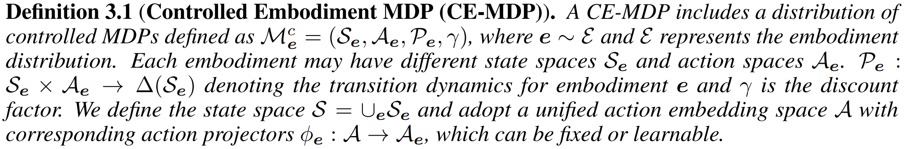
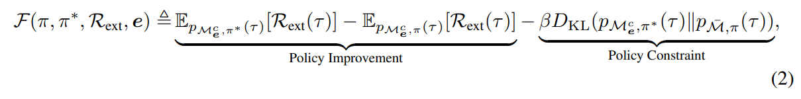
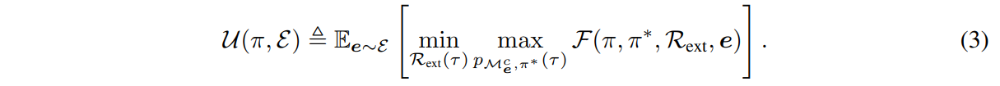
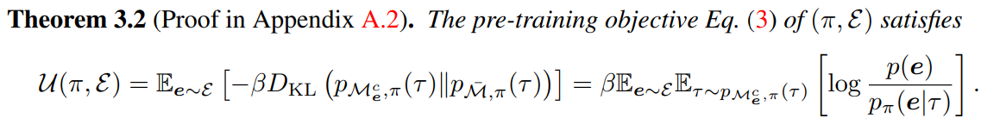
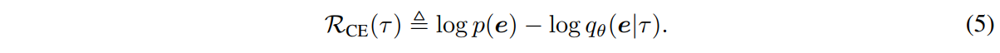
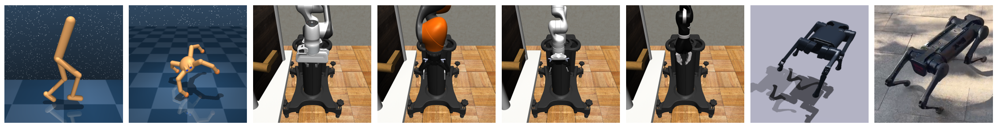
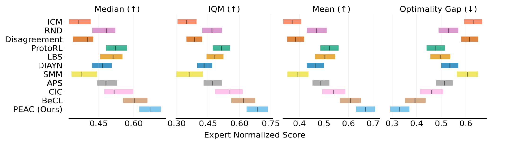
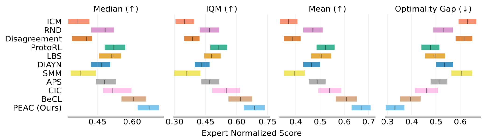

Abstract
Designing generalizable agents capable of adapting to diverse embodiments has achieved significant attention in Reinforcement Learning (RL), which is critical for deploying RL agents in various real-world applications. Previous Cross-Embodiment RL approaches have focused on transferring knowledge across embodiments within specific tasks. These methods often result in knowledge tightly coupled with those tasks and fail to adequately capture the distinct characteristics of different embodiments. To address this limitation, we introduce the notion of Cross-Embodiment Unsupervised RL (CEURL), which leverages unsupervised learning to enable agents to acquire embodiment-aware and task-agnostic knowledge through online interactions within reward-free environments. We formulate CEURL as a novel Controlled Embodiment Markov Decision Process (CE-MDP) and systematically analyze CEURL's pre-training objectives under CE-MDP. Based on these analyses, we develop a novel algorithm Pre-trained Embodiment-Aware Control (PEAC) for handling CEURL, incorporating an intrinsic reward function specifically designed for cross-embodiment pre-training. PEAC not only provides an intuitive optimization strategy for cross-embodiment pre-training but also can integrate flexibly with existing unsupervised RL methods, facilitating cross-embodiment exploration and skill discovery. Extensive experiments in both simulated (e.g., DMC and Robosuite) and real-world environments (e.g., legged locomotion) demonstrate that PEAC significantly improves adaptation performance and cross-embodiment generalization, demonstrating its effectiveness in overcoming the unique challenges of CEURL.
CEURL Overview
The left subfigure illustrates the cross-embodiment setting with various possible embodiment changes. Directly training RL agents across embodiments under given tasks may result in task-aware rather than embodiment-aware knowledge. CEURL pre-trains agents in reward-free environments to extract embodiment-aware knowledge. The center subfigure shows the Pre-trained Embodiment-Aware Control (PEAC) algorithm, using our cross-embodiment intrinsic reward function. The right subfigure demonstrates the fine-tuning phase, where pre-trained agents fast adapt to different downstream tasks, improving adaptation and generalization.
Theoretical Analyses
We first formulate CEURL as the following CEMDP
Then we analyze the cross-embodiment the fine-tuning objective 𝓕 and the pre-training objective 𝓤, of which the main principles are that the pre-trained agent can control the distribution of embodiments to adapt any downtream tasks with limited timesteps.
 Although the pre-training objective is complicated min-max problem, we can simplify it as below
The simplified objective can be further estimated by our cross-embodiment intrinsic reward
Then our PEAC will train an embodiment discriminator and utilize it to calculate the cross-embodiment intrinsic reward for pre-training. We also provide how to combine PEAC with existing exploration methods or skill discovery methods to achieve cross-embodiment exploration or cross-embodiment skill discovery respectively.
Experiments
We consider extensive experimental setting, including different embodiment changings, ranging from simulation to real-world, state-based input to image-based input, locomotion tasks to manipution tasks.
 

Real-world legged locomotion Video
BibTeX
@article{ying2024peac,
title={PEAC: Unsupervised Pre-training for Cross-Embodiment Reinforcement Learning},
author={Ying, Chengyang and Hao, Zhongkai and Zhou, Xinning and Xu, Xuezhou and Su, Hang and Zhang, Xingxing and Zhu, Jun},
journal={arXiv preprint arXiv:2405.14073},
year={2024}
}